Data Sources
We collected detailed player and team statistics from FBref.com, a trusted source for comprehensive football analytics. FBref provides in-depth data on players, teams, matches, and tournaments, making it an ideal platform for gathering performance metrics.
The data spans four football seasons, from 2020-2021 to 2023-2024, covering major leagues and tournaments such as La Liga, the Premier League, and the UEFA Champions League. Our primary focus was to extract performance metrics that could reveal insights into player efficiency, team strategies, and overall trends in football performance.
Each season's data was scraped separately, capturing the dynamic nature of football where player forms, team compositions, and tactical approaches vary each year. The data was then organized into two comprehensive datasets:
-
Player Stats: This dataset includes individual player-level metrics such as:
- ⚽ Goals, assists, and shots.
- 🔑 Passing accuracy and key passes.
- 🛡️ Defensive actions like tackles, interceptions, and blocks.
- ⏱️ Minutes played and appearances.
-
Team Stats: This dataset aggregates team-level metrics, such as:
- 📊 Possession percentage and passing accuracy.
- 🎯 Total shots, shots on target, and expected goals (xG).
- 🛡️ Defensive metrics like clean sheets and tackles per match.
- 📕 Disciplinary data including yellow and red cards.
The collected data serves as the foundation for our analysis, allowing us to explore various aspects of football performance, such as the correlation between player metrics and match outcomes, the impact of team formations on success rates, and trends in disciplinary actions over time.
By leveraging FBref's robust and reliable dataset, we ensured the accuracy and relevance of the insights derived from our analysis. The structured data collection process enabled us to combine season-specific statistics into unified datasets for comprehensive evaluations and visualizations.
Data Collection Process
1. Collecting Player Stats
Player statistics were scraped using Selenium and BeautifulSoup. Selenium was used to handle dynamic content on the FBref website. For example, the following code was used to scrape data for the 2020-2021 La Liga season:
from selenium import webdriver
from selenium.webdriver.chrome.options import Options
from bs4 import BeautifulSoup
import pandas as pd
# URL for La Liga 2020-2021 player stats
url = 'https://fbref.com/en/comps/12/2020-2021/stats/2020-2021-La-Liga-Stats'
# Setup Selenium with headless Chrome
chrome_options = Options()
chrome_options.add_argument("--headless")
driver = webdriver.Chrome(options=chrome_options)
# Open the URL and extract the page source
driver.get(url)
soup = BeautifulSoup(driver.page_source, 'html.parser')
# Find the player stats table by its ID
table = soup.find('table', {'id': 'stats_standard'})
df = pd.read_html(str(table))[0] # Parse the table into a DataFrame
# Save the data to a CSV file
df.to_csv('la_liga_2020_2021_player_stats.csv', index=False)
This process was repeated for the 2017-2018, 2018-2019, 2019-2020, and 2020-2021 seasons, resulting in four separate files. The files were later combined into a single dataset: Player_stats.csv.
2. Collecting Team Stats
Team statistics were collected using BeautifulSoup and requests. We fetched URLs for each team, scraped relevant tables, and combined the data. Here’s an example of extracting team stats for the 2020-2021 La Liga season:
from bs4 import BeautifulSoup
import requests
# Fetch team URLs
response = requests.get('https://fbref.com/en/comps/12/2020-2021/2020-2021-La-Liga-Stats')
soup = BeautifulSoup(response.text, 'html.parser')
team_links = [f"https://fbref.com{a['href']}" for a in soup.find_all('a', href=True) if '/squads/' in a['href']]
# Scrape "Scores & Fixtures" and "Shooting" tables for each team
for team_url in team_links:
team_page = requests.get(team_url)
team_soup = BeautifulSoup(team_page.text, 'html.parser')
scores_fixtures = pd.read_html(str(team_soup), match="Scores & Fixtures")[0]
# Process and save the data...
This process was also repeated for four seasons and the resulting files were merged into Team_Stats.csv.
3. Collecting Additional Team Data
In addition to the initial Team_Stats.csv dataset, another dataset named Team Dataset 2 (originally cleaned_dataset_no_index.csv) was created. This dataset aggregates and enhances the initial team statistics with additional cleaned and processed metrics. It combines player and team-level information for a more comprehensive analysis.
import pandas as pd
# Load the cleaned dataset
cleaned_data = pd.read_csv('cleaned_dataset_no_index.csv')
# Display the first few rows of the dataset
print(cleaned_data.head())
The Team Dataset 2 was used alongside the original Team_Stats.csv for advanced team-level analysis, providing deeper insights into team dynamics and player contributions.
Data Cleaning Steps
Data cleaning is a crucial part of the process to ensure accuracy and usability. Here are the steps we followed to clean our dataset:
- Removed rows with missing values for key metrics like goals and assists.
- Renamed ambiguous column headers to more descriptive names.
- Filtered out players with zero minutes played to focus on active participants.
- Removed duplicate rows and aggregate data like "Team Totals".
# Remove missing values
df = df.dropna(subset=["Goals", "Assists"])
# Rename columns
df.rename(columns={"Gls": "Goals", "Ast": "Assists"}, inplace=True)
# Filter active players
df = df[df["Minutes Played"] > 0]
Data Visualizations
Data visualizations are essential for interpreting complex datasets and conveying insights effectively. By representing data visually, we can identify patterns, trends, and outliers that may not be apparent in raw data. Below are some of the visualizations we created to illustrate key findings from our analysis:
Top 10 Players by Goals Over Seasons
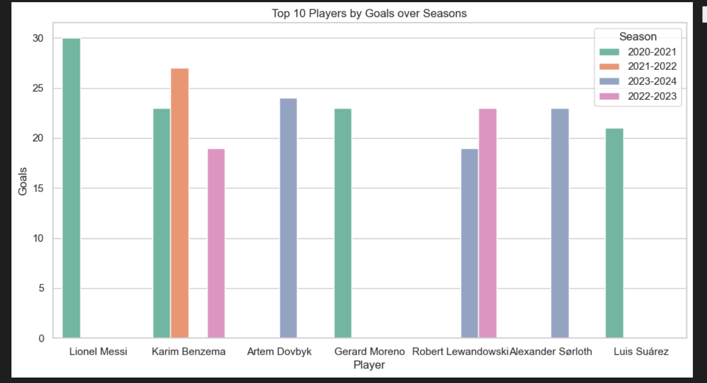This bar chart highlights the top 10 players based on the total number of goals they scored across multiple seasons. By comparing goal-scoring performance year over year, it provides insights into consistency, improvement, or decline in player productivity.
Goals per Season
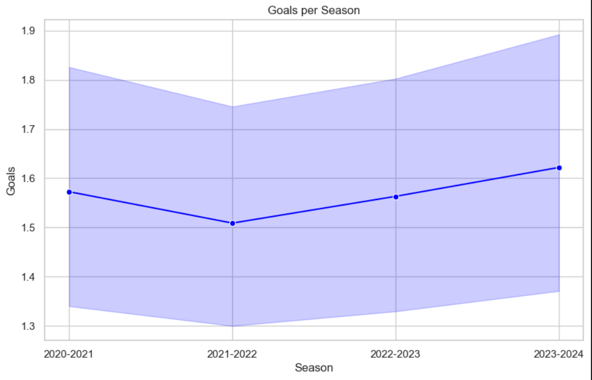This line graph shows the total goals scored across all players in each season, offering a macro-level view of scoring trends. Peaks or troughs may indicate changes in gameplay dynamics, tactical shifts, or significant league-wide events.
Top Players by Goals Across Seasons
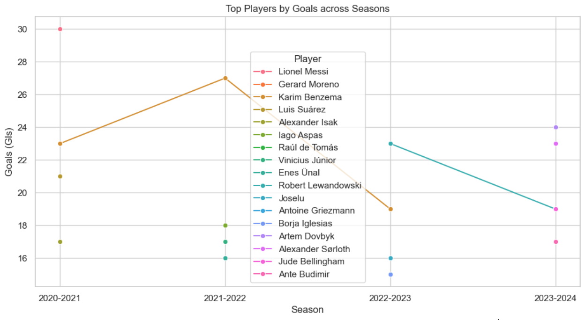This visualization compares the cumulative goal-scoring records of the top players over the analyzed seasons. It sheds light on the dominance of individual players and their relative contributions compared to peers.
Minutes Played vs. Goals Scored
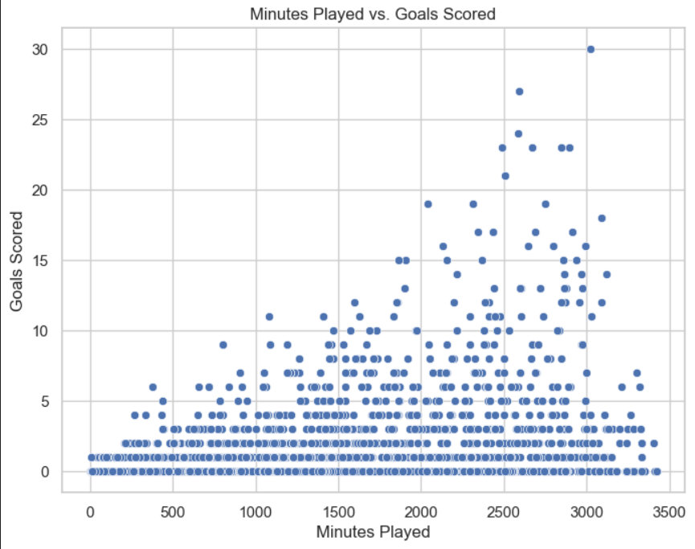The scatter plot examines the relationship between the number of minutes played and goals scored by players. Clusters and outliers reveal players who maximize their time on the field versus those who underperform.
Distribution of Goals per 90 Minutes by Position
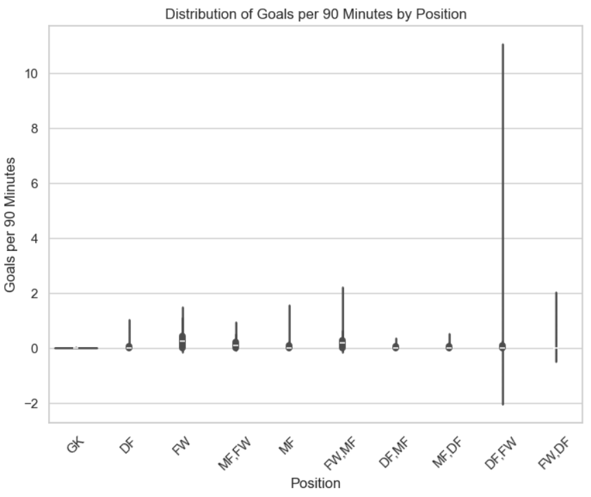This box plot shows the distribution of goals scored per 90 minutes categorized by player positions. It highlights positional differences in scoring frequency and identifies roles that contribute most to offensive play.
Proportion of Red and Yellow Cards
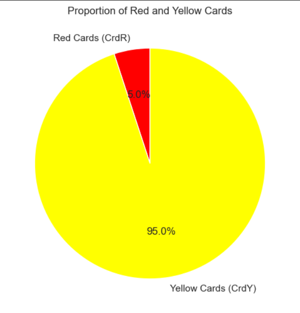The pie chart depicts the proportion of red and yellow cards received by players across seasons, reflecting disciplinary trends. It helps assess player behavior and its potential impact on team performance.
Density Plot - Expected Goals (xG) vs Non-Penalty xG (npxG)
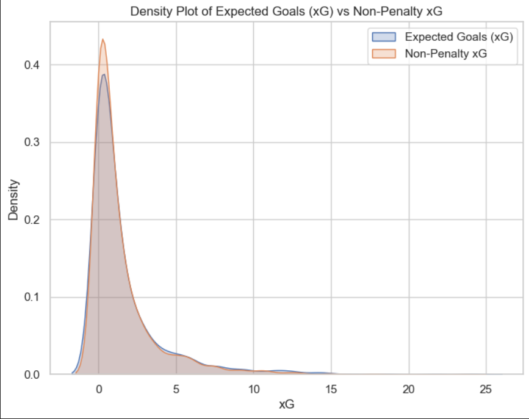This density plot compares expected goals (xG) to non-penalty expected goals (npxG) for players, excluding penalty contributions. It evaluates the quality and frequency of goal-scoring opportunities during open play.
Top 10 Players by Contribution to Team Goals (%)
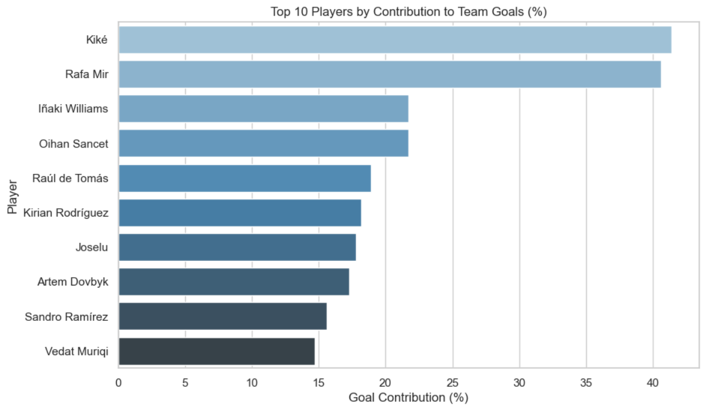This bar chart displays the percentage contribution of individual players to their team’s total goals. It emphasizes the reliance of certain teams on star players.
Performance of [Player Name]
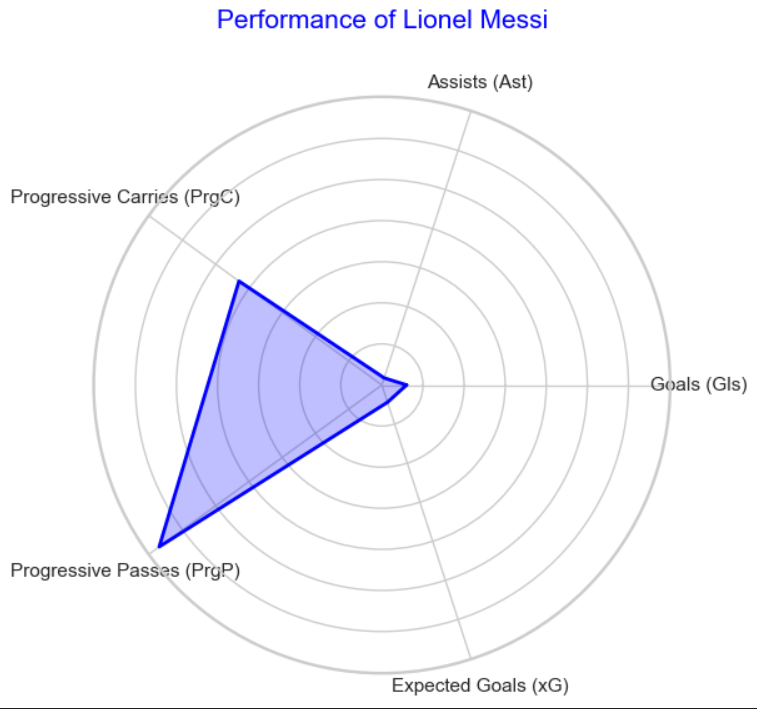This detailed visualization focuses on an individual player, breaking down their performance across metrics like goals, assists, and defensive actions.
Total Matches Played per Team by Season
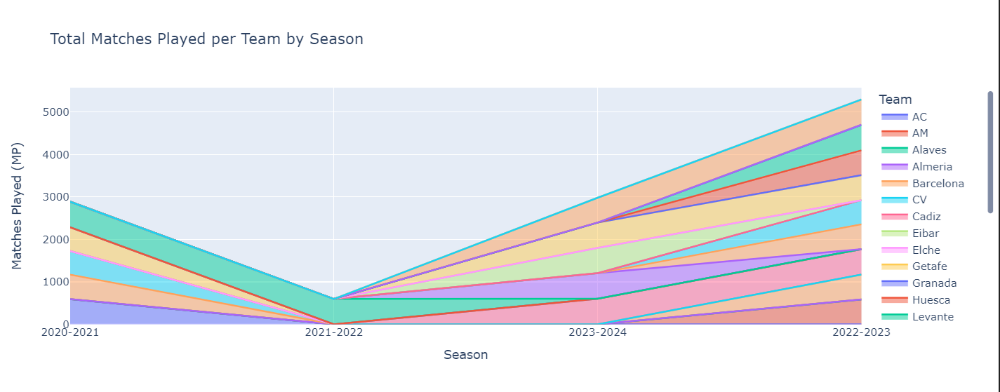This bar chart summarizes the total matches played by each team in a season, highlighting team participation levels and consistency.
Goals and Assists per 90 Minutes by Season
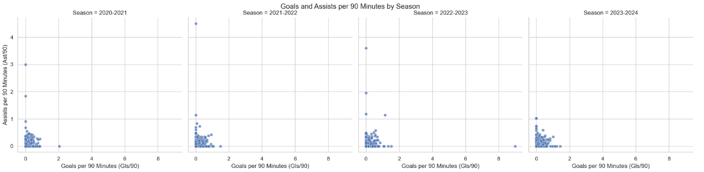This plot evaluates offensive contributions by measuring goals and assists per 90 minutes played across different seasons.
Football Pitch Lineup Visualization
This model generates unique football lineups for the 4-3-3 formation, visualized on a football pitch for each season. Players are assigned positions based on their performance metrics, primarily "Goals + Assists," ensuring the strongest lineup for each season.
2020-2021 Lineup
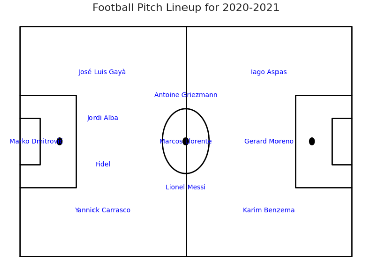
Forward Line: Iago Aspas (Right Wing), Antoine Griezmann (Striker), Yannick Carrasco (Left Wing).
Midfield: Gerard Moreno, Lionel Messi, Marcos Llorente.
Defense: José Luis Gayà (Left Back), Jordi Alba (Center Back), Fidel (Center Back), Marko Dmitrović (Right Back).
Goalkeeper: Marko Dmitrović.
2021-2022 Lineup
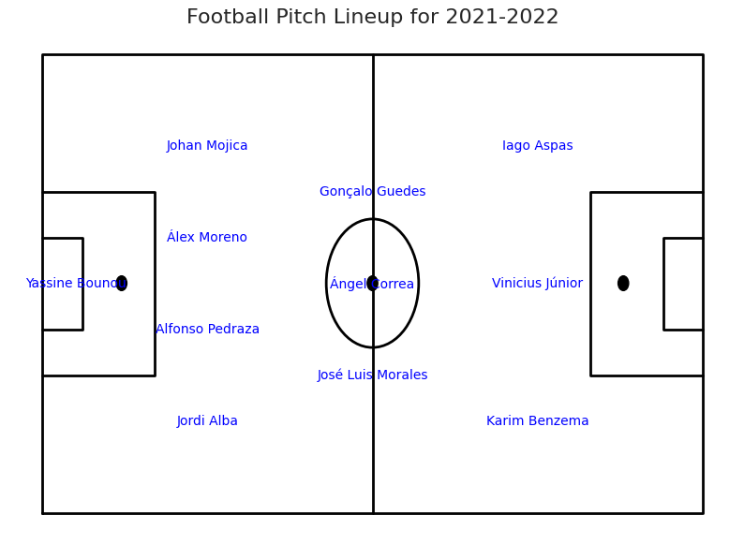
Forward Line: Iago Aspas (Right Wing), Karim Benzema (Striker), Vinícius Júnior (Left Wing).
Midfield: Ángel Correa, José Luis Morales, Gonçalo Guedes.
Defense: Johan Mojica (Left Back), Jordi Alba (Center Back), Alfonso Pedraza (Center Back), Álex Moreno (Right Back).
Goalkeeper: Yassine Bounou.
2022-2023 Lineup
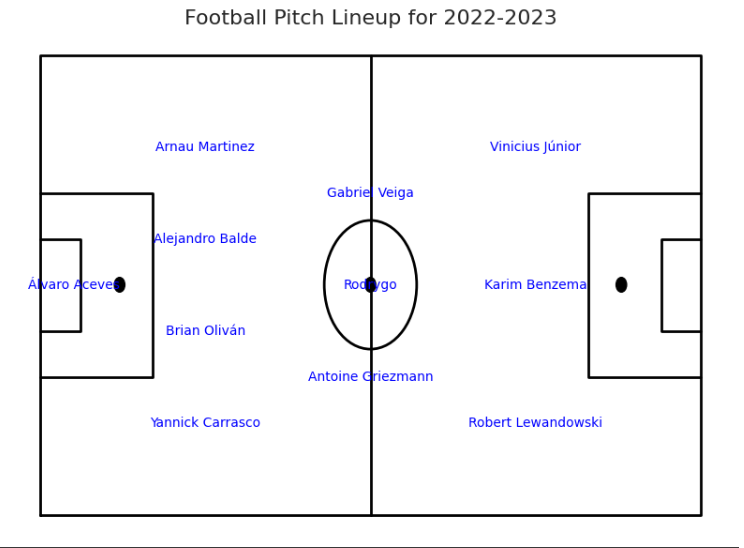
Forward Line: Vinícius Júnior (Right Wing), Karim Benzema (Striker), Yannick Carrasco (Left Wing).
Midfield: Gabriel Veiga, Antoine Griezmann, Rodrygo.
Defense: Alejandro Balde (Left Back), Arnau Martinez (Center Back), Brian Oliván (Center Back), Álvaro Aceve (Right Back).
Goalkeeper: Álvaro Aceve.
2023-2024 Lineup
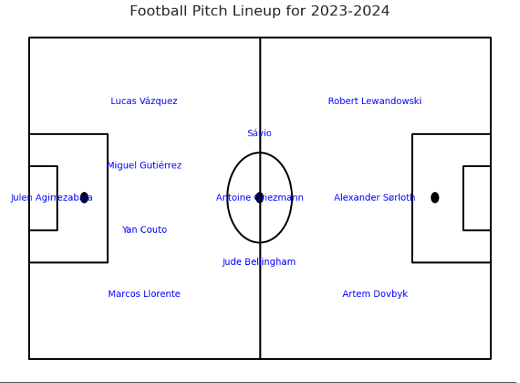
Forward Line: Robert Lewandowski (Right Wing), Alexander Sørloth (Striker), Sávio (Left Wing).
Midfield: Jude Bellingham, Antoine Griezmann, Marcos Llorente.
Defense: Miguel Gutiérrez (Left Back), Lucas Vázquez (Center Back), Yan Couto (Center Back), Artem Dovbyk (Right Back).
Goalkeeper: Juleh Agirrezabala.